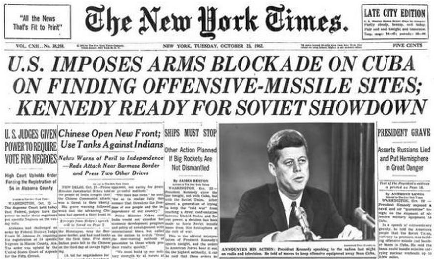
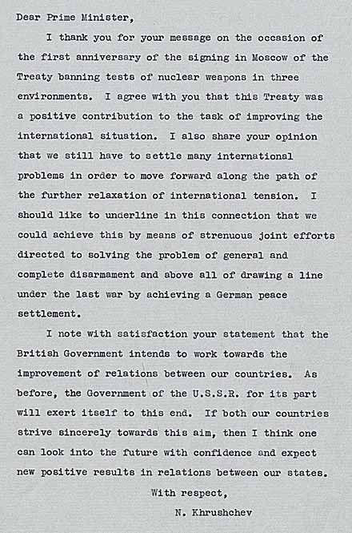
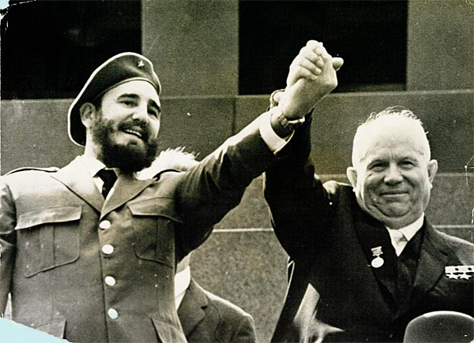
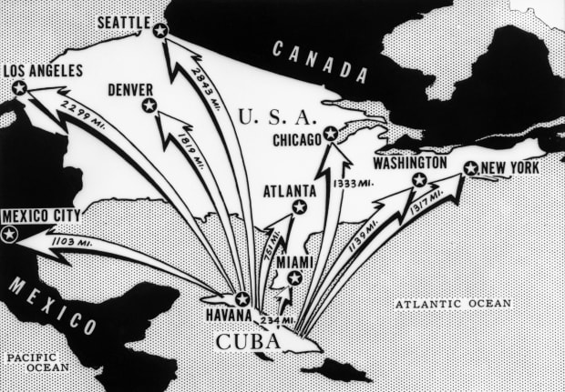

For 13 days in 1962, Americans were in danger of being hit with nuclear attacks from the USSR. Even the U.S. Secretary of Defense at the time said “I thought it was the last Saturday I would ever see”. Fortunately, the then U.S. President, John F. Kennedy, was successful in deescalating the situation. The Cuban Missile Crisis affected the Cold War by improved international relations between the two world superpowers, weakened the USSR’s influence in Cuba, and reduced the threat of nuclear confrontation.

First Point
The USA and USSR were able to improve their relations because of this conflict. President JFK communicated with Premier Khrushchev of the USSR. It was through a letter directly from Khrushchev to JFK that they made the deal to end the conflict. The USSR would take out their missiles from Cuba and the USA would take out their missiles from Turkey. As well, Khrushchev sent a letter to the British Government explaining how the USSR will do their part to improve relations. Saying, “I note with satisfaction your statement that the British Government intends to work towards the improvement of relations between our countries.”

Second Point
Khrushchev claimed the missiles in Cuba were incapable of striking the US. Although the US believed they would eventually be able to strike Canada. He wanted the missiles there to defend Fidel Castro, an ally. They were uncomfortable with the large gap between the US and Cuba’s nuclear power. Without the missiles, the USSR had less power within Cuba. As well, the decision to take away the missiles was not liked by Castro. He was not consulted in the decision. It is believed this was a crucial aspect in his loss of power in 1964. Between then and the USSR’s collapse in 1991, their alliance was continually weakening.

Third Point
The USA prevented Cuba from gaining nuclear power, but also lost some nuclear power. Without the missiles in Turkey, the USA had one less card in their hand. More formally though, two nuclear treaties were signed by the two countries. The first one being the Limited Test Ban Treaty of 1963. This banned nuclear tests in the atmosphere, in space, and underwater. The second one being the Nuclear Non-Proliferation Treaty of 1968. Many countries signed this, and it set a precedent for responsible use and development of nuclear technology. Finally, following the crisis, a hotline was set up from the USA to the USSR. This way JFK and Khrushchev could quickly contact each other to prevent future problems.

Conclusion
While the Cuban Missile Crisis was scary, it had some positive effects. This scare motivated the USA and USSR to improve their relationship. Such as developing a hotline to contact each other faster. As well, it also led to a couple treaties including one that had many countries irrelevant to the crisis sign it. The Cuban Missile Crisis affected the Cold War by improved international relations between the two world superpowers, weakened the USSR’s influence in Cuba, and reduced the threat of nuclear confrontation.